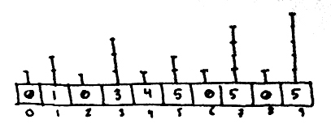
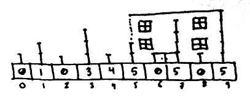
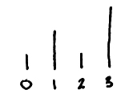

Skylinesort, explained
1 Introduction
My friend had a dancing frog on his computer.
You know, as in One Froggy Evening:
https://www.youtube.com/watch?v=6wd_6Y0wQOA
If the link doesn't work by the time you read this, I encourage you to search for it, it will become a valuable metaphor for you to use for the rest of your life.
So, every time we met, Daniel talked to me about speed, bitwise operations and sorting algorithms. I program myself, but I didn't truly understand microprocessor instructions or how higher level languages were translated into assembly code. I still don't completely. He had a dancing, talking frog in his computer, but only he was able to see it. Until now.
Before I start dissecting this frog I should make note that I'm not an expert biologist. This article and the code that comes with it it's the product of my enthusiasm for new fascinating topics. So use it a an introduction to sorting and skylinesort.
2 Notes
I'll be using the words "vector" and "array" interchangeably, they mean, in this context, the same thing. They are used too much, so this avoids some word repetition.
The input array is the unsorted vector that enters our sorting algorithm.
The output array is the sorted vector that exits our algorithm.
3 Counting sort
Counting sort is the algorithm that inspired skylinesort, so it makes sense to cover it first.
3.1 General View
When we first think about sorting numbers, it's very hard to think of a method that doesn't involve, at some point, comparing numbers together: We take a number and we compare it with another, if it's bigger we put it to its right, if it's smaller we put it to its left.
Counting sort is a very simple and beautiful idea: what if, instead of comparing numbers together multiple times to position them in the correct order, we position each number in the REAL place it belongs to in the number line, and then we just cut the blank space between them.
This idea results very fast when the total span we use in the number line isn't very long. Cutting empty pieces of the number line can be expensive.
When the numbers in an array are close together, nothing can beat counting sort.
3.2 Details
To achieve what it does, counting sort uses what is called a counting array. This is a vector as long as the range between the smallest possible value and the largest possible value in the input array. Any number we take from the input array belongs to a place in the counting vector. This serves as our number line.

What we then do is, in each number (or position) of our number line (counting array) we store the amount of times that number appears in the input vector.

When this is done, we know how many of each element we have in the input vector. And, in a way, they are already sorted! They are just separated by a whole lot of zeroes.
The thing is the computer doesn't have this sort of top view of the whole vector. For it, the final order of the elements isn't obvious, so we have to find a step by step way to gather the numbers we placed in the number line.
The solution is to travel the counting vector one element at a time, and each time we find a non-zero element we put that number of times the corresponding number in our output array. The problem with this solution is we are traversing the whole counting vector. A vector that is most likely full of zeroes!
What if we could just jump across the zeroes in the counting array, going from one relevant position to the next? This is what skylinesort is about.
4 Skylinesort
4.1 General View
The whole approach of the algorithm is to try our best to avoid having to travel through the vast numbers of 0s that possibly populate the immense majority of our counting vector.
To do this, we make some extra work during the first iteration over our input array. Just as in counting sort, for each element, we count its appearances in the counting vector, but we also place each number in certain positions in an auxiliary array. When we finish, we will travel through this auxiliary array backwards using a method described later, making jumps as we go and finding every time the next element to be put into the output vector. This is the way skyline sort skips having to go through all the elements in the counting vector.
4.2 Step by Step
I will start with a guide through every step of skylinesort. This will give you a good idea of how it works and why it works. After this, I will comment further on the steps involved.
The first thing we do is to create a counting array and an auxiliary array. Every element in the input vector should have a unique place in our counting array and in our auxiliary array.
The counting vector must be at least as big as the biggest number we can encounter in the input array, and the auxiliary vector must also be at least that big.
Both this vectors will start being populated only by zeroes.


We start iterating over our input array. We take an element. We increase its count in the counting vector. Then we place the element in its position in the auxiliary array. So far, for the first element in the input vector we have this:

For the step that comes next we have to imagine a series of sticks over each position in the auxiliary vector. The details of the stick heights will be explained later.

We go to the position of the element we just placed in the auxiliary vector, and from the top of the stick in that position we draw a line going right. This line will come across another stick in a bigger position, if that position holds a number that's less than our current element, our element takes over that position, placing itself there. From the new position we draw a line from the top of the stick to the right, repeating this process until we either find a bigger element in another position or we reach the end of our auxiliary array.
After this process we have the following:

We do this for the rest of the elements in the input array, each time increasing the element's count in the count vector and placing it in the corresponding places in the auxiliary vector.
I encourage you to do the mental process for the next element in the input vector, which is 3.
After we do this for every element in the input array we end up with this:

Now we have to build the output vector. We position ourselves at the last element of the auxiliary array. Because of the way we populated this array, this last element is the biggest number in the input array. So we place this element in the last position in our output vector, and then again to the left of it, as many times as the counting vector indicates for that element.
Now comes the step that gives this algorithm its name. Because of the way we built the auxiliary array, we know that between the element we are working on and the position equal to that element, there are no other values in the auxiliary array except itself and zeroes. So we go straight to the element's position. If we imagine we are making this jump traveling perpendicular from the top of the current stick to its left, we have drawn our first building in the skyline and jumped across a large portion of the number line!

From our current position in the auxiliary vector we go one step to the left. Do we encounter another non-zero element? If that is the case, we repeat the process just described, drawing our second building. Otherwise we keep traveling to the left until we are able to make another leap.
We continue doing this process to find non-zero elements in the auxiliary array, until either we complete the output vector or we reach a point we know only zeroes are left to be put there (we can know this if the amount of spaces left to fill in the output vector is equal to the count at index 0 in the counting array).
4.3 Further Explanations
So we have seen skylinesort work. In general words we can describe it this way: Skylinesort is an integer sorting algorithm that uses a count vector to keep track of duplicates and an auxiliary vector to determine the relative positions of the elements in the input vector.
The populating and traveling of the auxiliary vector is the part of the algorithm that deserves more explanation.
You have seen the final step of the algorithm, when we start jumping backwards searching for elements. What defines this step is the ability to jump when we find an element to a position equal to that element. For this to be possible we have to make sure we are not skipping other elements when we jump, which is the same as to say that in the span we are jumping across there are no other elements but the number we found and zeroes.
So the auxiliary vector must be constructed in such a way that every element in the input vector covers an uninterrupted span of territory (only that element and zeroes).
For every element in the input vector we have to make some sort of process in which we have to populate elements to the right of its position until encountering a bigger number. If we simply visited every element to our right we would be losing the valuable opportunity of leaving some zeroes in-between. Leaving zeroes in-between though, means skipping places, places where other numbers might be already in place, and we can't allow other numbers to cover the span of our territory.
This figure is used to explain how we can safely skip numbers:

If we take the number 2 from the input vector, we place it at position 2. Then we check elements to the right of it. In this case we have to check only place 3. We place a 2 there if 2 is bigger than the number already there.
Let's say then we take number 1 from the input vector. We could check place two and, if no element is found, check place three next, but it's not necessary, we can skip directly to checking place 3. This is because we know only one of three possible situations can happen, and all three of them ensure uninterrupted territories:
1 - Possibility one is there will never be a number 2 in our input vector, so no need to check position 2 in this case. 2 - Possibility two is there is a number 2 in our input vector that hasn't come out yet. We skip place two for now and place a 1 on place three. When the 2 comes out, it will take its place and override place 3, so everything will remain in order. 3 - Possibility three is number 2 has already appeared, and has already taken place three. From number 1 we check place 3, we see a two there, so we do nothing, we know we have a two in front of us that has taken place three so we have no more territory to cover.
Here is a copy of the previous figure to illustrate the next paragraph:
Finally, lets say we take a 0 from the input vector. In this case we have nothing to check, since 0 has already all the board covered. But, if it were a relevant number, we would only have to check place 1 and, if no element is found, check only place 3 next. This is the reasoning in two steps: 1 - We check place 1, if we find a 1 there, we stop, its bigger than the zero we are inserting. 2 - If there is a 0 in place 1, then we follow the reasoning discussed before: we can go from place 1 directly to place 3 since the number 2 will override place 3 if it were to appear.
Now, why use this stick lengths and no others? I'm afraid I can only give you a hint on this, since I find it intriguing too. I have only a part of the answer: We can use simple, fast bitwise operations to reach this positions. For a position 'p', the next position to check is (p | (p + 1)). The jumping process in this algorithm will be repeated many, many times during the algorithm, so it better be damn fast. And it is.
In short, we put elements in the auxiliary vector by first placing them in an index equal to themselves and then populating elements to their right until encountering a bigger number. Repeating this process for every input element gives us an auxiliary array in which every element in the input vector covers a span of territory. With "span of territory" I mean each element covers an uninterrupted zone that contains only copies of himself and zeroes.
Finally, the backward travel process works because we ensured uninterrupted territories during forward travel. We know if we find a 15 in a position, there are only 15s and zeroes between that position and position 15, so we can jump safely to position 15.
5 So, does it perform?
Yes, it does. It is faster at least half the situations against other staple algorithms like quicksort and bitwise-radixsort. The remaining half is very close.
Accompanying this article should be some C# code that handles comparisons between different algorithms, including a mixture of skylinesort with radixsort that is surprisingly fast. Give it a try so you can see for yourself. You can check the code if you have doubts about the algorithms implementation. If you find a mistake or an optimization to make to an algorithm in the list then please fix it and compare it with skyline and skyline-radix.
I chose to write the code in C# because I work making games in the Unity engine, so I feel most comfortable with this language.
Finally, I must inform you my friend Daniel has recently finished a faster version of skyline sort which he calls catsort. This dancing frog promises to forever obscure the existence of Michael Jackson. This is very exciting news for me, and I hope also for you. I hope he is willing to share it as he did with skyline. If he eventually does, I will make another, similar article with the details.
Thank you a lot for reading. Have a great day.